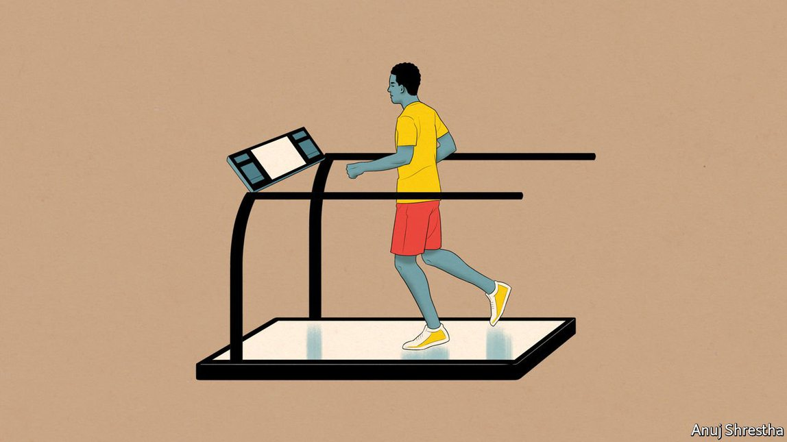

2021-07-29T12:59:55+00:00
iHealthy：2028年9月
如果智能手机化身个人健康助理会怎样？
苹果最新款iPhone围绕健康监测功能打造。2028年的想象场景【《畅想未来》系列之二】

二O一九年，时任苹果公司老板蒂姆·库克在接受采访时说，“想象你穿越到未来……你问，‘苹果对人类做出的最大贡献是什么？’那将和健康有关。”在那会儿，这听起来就是CEO们标配版的自卖自夸。但是，将近十年过去了，随着本周iPhone XX（读作“iPhone 20”）的发布，他的预测可能要成真了吗？
最新款iPhone与其说是一部手机，不如说是一个个人医疗数据中心。它的某些特色是对现有功能的升级，例如跟踪睡眠、月经和运动，以及可以顺畅访问健康记录和其他个人文件。从外形上看，手机本身跟以往型号差不多——这些薄薄的黑方块在过去15年里都无甚变化。相反，定义iPhone XX的是本周发布的大量配件。它们可能会彻底改造个人和公共健康。
多年来，这家公司的健康追踪模式一直围绕Apple Watch展开。2015年问世的第一代Apple Watch就已经可以测量运动和心率。自那以后，它添加了各种传感器来测量心脏活动、血压、体温、血氧、血糖以及血液中的酒精浓度。此外，软件上的微调让它能探测发烧、跌倒、心律不齐以及痴呆症的早期迹象。
但并不是每个人都想买（或买得起）一块带有所有这些功能的精致手表。与此同时，消费者健康设备市场快速发展。有了新系列的附加配件后，苹果扩展也拆分了它的健康追踪功能。与药店出售的笨重设备不同，苹果的这些配件外观优雅、安装步骤极简、与苹果手持设备无缝集成，并且瞄准有特定健康关切的人。例如，为糖尿病患者提供的49美元的设备可以检测血糖水平，而为呼吸系统疾病患者提供的69美元的设备包含血氧仪和肺活量计。
其他传感器专注于监测睡眠、高血压、乳糜泻和生育能力。有些尚未获得监管部门批准。仅过去三年里苹果就收购了十几家打造居家诊断工具的公司，但它没法把所有这些工具都塞进一块手表或一部智能手机中。自然而然地，它开始分开销售一些健康设备和服务。
除了这些设备，苹果还推出了一系列额外的订阅服务。例如，糖尿病套餐包括了一个灵便的应用，当你把iPhone的摄像头对准任何食物时，它就会估算出升糖指数以及营养和热量。在了解你的饮食状况两周后，该应用开始温和地建议你替换掉一些食物和改变某些饮食习惯。每个配件都附带一年的相关服务订阅。而虽然某些配件与旧款iPhone兼容，但只有最新款iPhone兼容所有这些配件。
这一切可能是公共卫生的福音。携带着能持续监测生命体征的设备的人越多，就越可能及早发现疾病，并把传染病的爆发扼杀在萌芽状态。
但也有巨大的担忧。首先是隐私。苹果声称iPhone是各种个人数据的安全存储库，并强调它在用户设备本地而非云中存储和处理数据的模式。它也允许用户将自己的数据分享给医学专家并参与经苹果半自治的数据伦理委员会批准的试验。但隐私权活动人士指称苹果的规则不透明且混乱。第二个问题是公平性。大多数人买不起iPhone，所以能从苹果设备中获益的人将主要是那些本来就已经能求助于好医生和获得可靠诊断的人。
然而，也有理由抱持乐观。苹果于2007年推出iPhone时，人们难以想象区区十来年后，世界上一半的人口就都拥有了智能手机。如果以过去20年发生的事为指引，其他公司（如三星和谷歌）将会复制苹果的思路，从而带动健康监测和诊断领域里爆发一轮竞争、创新和大规模普及——就像过去在手机上发生的那样。这可能才是苹果对人类真正的贡献，比它用自己的设备所做的还要多。
2021-07-29T12:59:55+00:00
iHealthy: September 2028
What if smartphones became personal health assistants?
The latest model of Apple’s iconic iPhone is built around health-monitoring features. An imagined scenario from 2028
IN 2019 TIM COOK, then boss of Apple, gave an interview in which he said, “if you zoom out into the future…and you ask the question, ‘What was Apple’s greatest contribution to mankind?’ it will be about health.” It sounded like standard-issue CEO boosterism at the time. But nearly a decade later, with this week’s announcement of the iPhone XX (pronounced “iPhone 20”), might his prediction be about to come true?
The latest iPhone is not so much a phone as a personal medical-data hub. Some of its features are upgrades of existing functions, such as tracking of sleep, menstruation and movement, and seamless access to health records and other personal documents. Physically, the device itself looks much the same—little has changed about these slim black rectangles over the past 15 years. Instead, it is the myriad accessories unveiled this week that define the iPhone XX. They could be game-changers for both personal and public health.
For many years the company’s approach to health tracking has focused on the Apple Watch. Even the original model, launched in 2015, could measure movement and heart rate. Since then, sensors have been added to measure heart activity, blood pressure, body temperature and levels of oxygen, sugar and alcohol in the blood. In addition, software tweaks have granted it the ability to spot fevers, falls, irregular heart rhythms and early signs of dementia.
But not everyone wants (or can afford) to buy a fancy watch with all these features. Meanwhile, the market in consumer-health devices has boomed. With its new range of add-on accessories, Apple has both expanded and unbundled its health-tracking features. Unlike the clunky devices available at pharmacies, Apple’s are elegant, require minimal setup, integrate seamlessly with Apple handsets and are aimed at people with specific concerns. A $49 device for people with diabetes, for example, offers blood-sugar monitoring, while a $69 device for those with respiratory conditions includes an oximeter and a spirometer.
Other sensors focus on monitoring of sleep, hypertension, coeliac disease and fertility. Several have yet to win regulatory approval. In the past three years alone, Apple has acquired a dozen firms that make home-diagnostics tools, not all of which can be built into a watch or a smartphone. So it makes sense to start selling some health devices and services separately.
Alongside these devices, Apple unveiled a range of extra subscription services. The diabetes package, for instance, includes a nifty app that guesses the glycaemic index and nutritional and calorific content of any food at which you point your iPhone’s camera. After two weeks of learning about your diet, the app starts subtly suggesting substitutions and changes to your eating patterns. Each accessory comes with a year’s subscription to the relevant service. And while some accessories are compatible with older iPhones, only the new model works with all of them.
All of this could be a boon for public health. The more people walk around with devices constantly monitoring their vital signs, the more likely it is that ailments can be caught early, and outbreaks of infectious diseases nipped in the bud.
Yet there are huge worries, too. The first is privacy. Apple touts the iPhone as a secure repository for personal data of all kinds, and emphasises its model of storing and processing data locally, on the user’s device, rather than in the cloud. It also allows users to share data with medical specialists and participate in trials approved by its semi-autonomous data-ethics committee. But privacy activists say Apple’s rules are opaque and confusing. The second concern is fairness. Most people cannot afford an iPhone. Apple’s devices will therefore mostly benefit those who already have access to good diagnostics and doctors.
There is also cause for optimism, however. When Apple launched the iPhone in 2007, it seemed implausible that just over a decade later half the world’s population would possess a smartphone. If the past two decades are any guide, other companies (such as Samsung and Google) will copy Apple’s ideas—spurring an outburst of competition, innovation and mass adoption in health-monitoring and diagnostics, as previously happened in handsets. That, even more than what Apple does with its own devices, may be the true contribution it makes to humankind. ■
2021-07-29T12:59:55+00:00
iHealthy：2028年9月
如果智能手機化身個人健康助理會怎樣？
蘋果最新款iPhone圍繞健康監測功能打造。2028年的想象場景【《暢想未來》系列之二】
二O一九年，時任蘋果公司老闆蒂姆·庫克在接受採訪時說，“想象你穿越到未來……你問，‘蘋果對人類做出的最大貢獻是什麼？’那將和健康有關。”在那會兒，這聽起來就是CEO們標配版的自賣自誇。但是，將近十年過去了，隨着本周iPhone XX（讀作“iPhone 20”）的發布，他的預測可能要成真了嗎？
最新款iPhone與其說是一部手機，不如說是一個個人醫療數據中心。它的某些特色是對現有功能的升級，例如跟蹤睡眠、月經和運動，以及可以順暢訪問健康記錄和其他個人文件。從外形上看，手機本身跟以往型號差不多——這些薄薄的黑方塊在過去15年里都無甚變化。相反，定義iPhone XX的是本周發布的大量配件。它們可能會徹底改造個人和公共健康。
多年來，這家公司的健康追蹤模式一直圍繞Apple Watch展開。2015年問世的第一代Apple Watch就已經可以測量運動和心率。自那以後，它添加了各種傳感器來測量心臟活動、血壓、體溫、血氧、血糖以及血液中的酒精濃度。此外，軟件上的微調讓它能探測發燒、跌倒、心律不齊以及痴呆症的早期跡象。
但並不是每個人都想買（或買得起）一塊帶有所有這些功能的精緻手錶。與此同時，消費者健康設備市場快速發展。有了新系列的附加配件後，蘋果擴展也拆分了它的健康追蹤功能。與藥店出售的笨重設備不同，蘋果的這些配件外觀優雅、安裝步驟極簡、與蘋果手持設備無縫集成，並且瞄準有特定健康關切的人。例如，為糖尿病患者提供的49美元的設備可以檢測血糖水平，而為呼吸系統疾病患者提供的69美元的設備包含血氧儀和肺活量計。
其他傳感器專註於監測睡眠、高血壓、乳糜瀉和生育能力。有些尚未獲得監管部門批准。僅過去三年里蘋果就收購了十幾家打造居家診斷工具的公司，但它沒法把所有這些工具都塞進一塊手錶或一部智能手機中。自然而然地，它開始分開銷售一些健康設備和服務。
除了這些設備，蘋果還推出了一系列額外的訂閱服務。例如，糖尿病套餐包括了一個靈便的應用，當你把iPhone的攝像頭對準任何食物時，它就會估算出升糖指數以及營養和熱量。在了解你的飲食狀況兩周後，該應用開始溫和地建議你替換掉一些食物和改變某些飲食習慣。每個配件都附帶一年的相關服務訂閱。而雖然某些配件與舊款iPhone兼容，但只有最新款iPhone兼容所有這些配件。
這一切可能是公共衛生的福音。攜帶着能持續監測生命體征的設備的人越多，就越可能及早發現疾病，並把傳染病的爆發扼殺在萌芽狀態。
但也有巨大的擔憂。首先是隱私。蘋果聲稱iPhone是各種個人數據的安全存儲庫，並強調它在用戶設備本地而非雲中存儲和處理數據的模式。它也允許用戶將自己的數據分享給醫學專家並參與經蘋果半自治的數據倫理委員會批准的試驗。但隱私權活動人士指稱蘋果的規則不透明且混亂。第二個問題是公平性。大多數人買不起iPhone，所以能從蘋果設備中獲益的人將主要是那些本來就已經能求助於好醫生和獲得可靠診斷的人。
然而，也有理由抱持樂觀。蘋果於2007年推出iPhone時，人們難以想象區區十來年後，世界上一半的人口就都擁有了智能手機。如果以過去20年發生的事為指引，其他公司（如三星和谷歌）將會複製蘋果的思路，從而帶動健康監測和診斷領域裡爆發一輪競爭、創新和大規模普及——就像過去在手機上發生的那樣。這可能才是蘋果對人類真正的貢獻，比它用自己的設備所做的還要多。